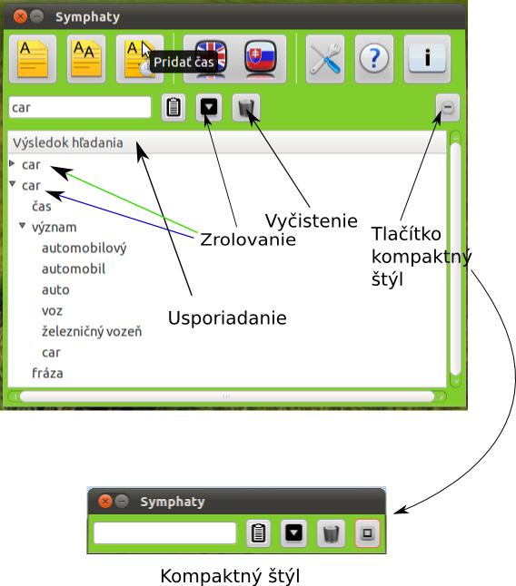

Tipy
V tejto sekcii sa oboznámime s užitočnými funkciami:
Usporiadanie slov podľa abecedy
Keď dáme preložiť slovo, preklad sa nám objaví v oblasti Výsledok hľadania.
Kliknutím na oblasť označenú na obrázku Usporiadanie sa nám preklad
usporiada podľa abecedy vzostupne alebo zostupne.

Rolovanie slov
Pri preklade sa nám vo výsledku hľadania objaví slovo rozbalené
s významom, časom a frázou. To môže niekedy zaberať veľa miesta,
preto kliknutím na tlačítko označené na obrázku ako Zrolovanie
sa nám tieto časti skryjú. Stav pred zrolovaním je označený zelenou
šípkou, stav po zrolovaní, modrou šípkou.
Vyčistenie prekladu
Keď preložíme veľa slov, môže sa nám ťažšie orientovať vo výsledkoch.
Výsledky prekladu môžme odstrániť stlačením tlačidla Vyčistenie.
Kompaktný štýl
Stlačením tlačidla Tlačidlo kompaktný štýl sa nám slovník
premení do kompaktného štýlu. Takto slovník zabere menej miesta
a môžme ho efektívnejšie využívať.